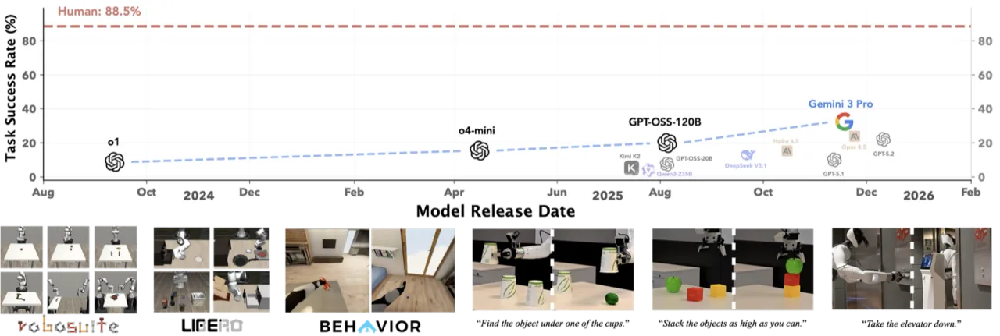
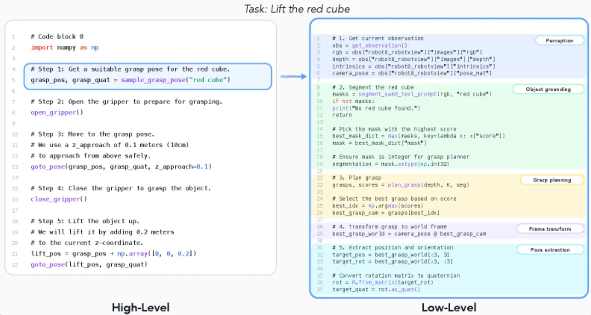
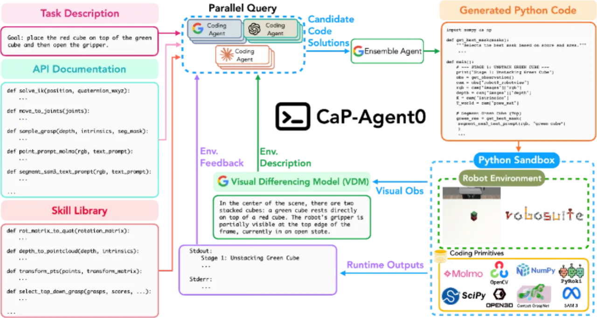
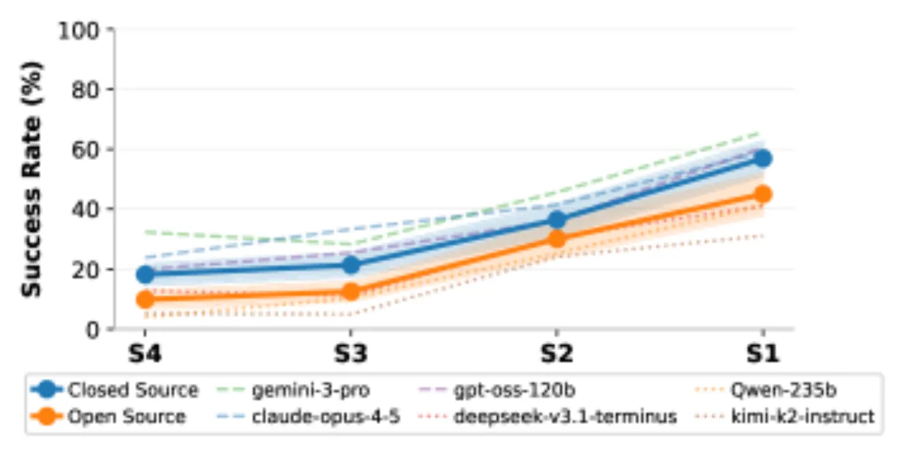
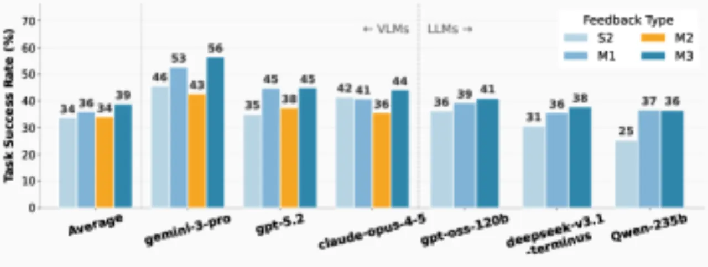
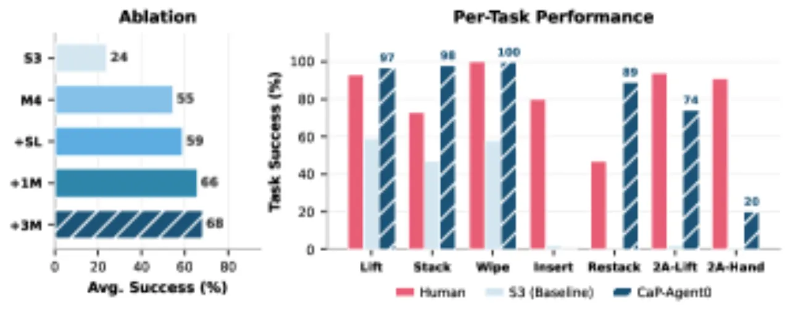
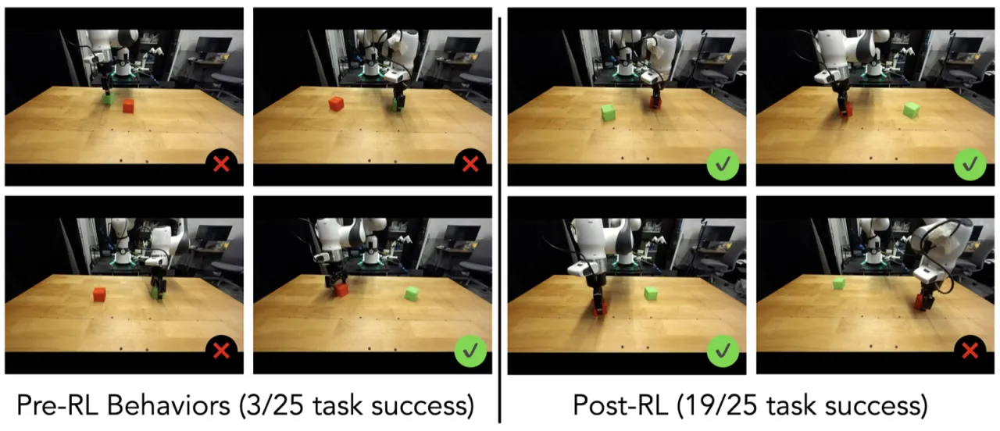

CaP-X 针对「代码即策略」（Code-as-Policy）在机器人操控中的系统化研究空白，提出了CaP-Gym交互环境、CaP-Bench多层次基准、训练无关的CaP-Agent0智能体框架，以及基于强化学习的CaP-RL方法。12个前沿语言/视觉语言模型在7个操控任务上与人类专家存在显著差距，但通过智能体框架与RL微调可大幅缩小这一差距。
「代码即策略」（Code-as-Policy）被视为数据密集型 VLA 方法的有力补充，但其作为自主控制器在 embodied manipulation 场景中的有效性仍严重缺乏系统性研究。现有工作大多依赖高层原语（如 stack_objs_in_order()），使得模型性能究竟来自智能体本身还是原语封装的任务先验难以区分，且未回答：当抽象层级降低时性能如何变化？增加测试时计算量是否能弥补低层接口带来的挑战？
"Code-as-Policy considers how executable code can complement data-intensive Vision-Language-Action (VLA) methods, yet their effectiveness as autonomous controllers for embodied manipulation remains underexplored."

CaP-X 由三个核心模块构成：CaP-Gym（交互环境）、CaP-Bench（多层次基准）、以及两种提升智能体性能的方法——训练无关的 CaP-Agent0 与基于 RL 微调的 CaP-RL。
CaP-Gym 是一个建立在标准 Gymnasium 接口之上的分层控制框架，将低层物理仿真（或真实机器人）与有状态的代码执行器循环相绑定。感知原语包括语言条件分割（SAM3）、开放词汇定点（Molmo 2）以及OpenCV/Open3D等视觉库。控制原语调用运动规划器或逆运动学求解器（PyRoki），而非直接输出关节空间动作命令。任务涵盖7项核心操控：Cube Lift、Cube Stack、Spill Wipe、Peg Insertion、Cube Re-stack、Two-Arm Lift 和 Two-Arm Handover。
CaP-Bench 系统地在抽象层级与观测模态两个维度评测模型：


CaP-Agent0 包含三个关键设计：
CaP-Gym 支持在策略编程智能体上直接进行在线强化学习（RLVR，使用可验证环境奖励）。具体采用 Group Relative Policy Optimization（GRPO）对 Qwen2.5-Coder-7B-Instruct 进行后训练，训练信号直接来自机器人操控环境的任务完成奖励，无需人工标注。
在RoboSuite仿真、LIBERO-PRO 和 BEHAVIOR（移动操控）三个平台上评测，对比 12 个模型与人类专家，并在真实 Franka Emika 机械臂上验证 CaP-RL。



| 基准 / 方法 | OpenVLA | π₀ | π₀.₅ | CaP-Agent0 |
|---|---|---|---|---|
| libero-object (Pos / Task) | 0.00 / 0.00 | 0.00 / 0.00 | 0.17 / 0.01 | 0.22 / 0.18 |
| libero-goal (Pos / Task) | 0.00 / 0.00 | 0.00 / 0.00 | 0.38 / 0.00 | 0.26 / 0.17 |
| libero-spatial (Pos / Task) | 0.00 / 0.00 | 0.00 / 0.00 | 0.20 / 0.01 | 0.12 / 0.14 |
在 LIBERO-PRO 上，CaP-Agent0 在 Task Success 指标上全面超越 VLA 基线（包括 π₀.₅），无需任何任务专属训练数据。注意 Pos（Position Success）和 Task（Task Success）是不同评测指标，CaP-Agent0 在 Task 层面优势更为明显。

| 任务 | Human Expert | Qwen 2.5 Coder 7B（未微调） | Qwen w/ CaP-RL（仿真） | Qwen w/ CaP-RL（真实） |
|---|---|---|---|---|
| Cube Lift | 93% / 92% | 25% / 24% | 80% | 84% |
| Cube Stack | 73% / 84% | 4% / 12% | 44% | 76% |
| Spill Wipe | 100% / — | 30% / — | 93% | — |
CaP-RL 将 Qwen2.5-Coder-7B 在 Cube Lift 上的仿真成功率从 25% 提升至 80%，在真实机器人上从 24% 提升至 84%；Cube Stack 从 4% 提升至 44%（仿真）和 76%（真实），展现出强泛化能力。
| 任务（N=25） | 指标 | Human Expert | S3（单轮低层） | CaP-Agent0 |
|---|---|---|---|---|
| Pick up Radio | Navigation Success | 88% | 72% | 80% |
| Pick up Radio | Task Success | 36% | 24% | 56% |
| Pick up Soda Can | Navigation Success | 80% | 52% | 84% |
| Pick up Soda Can | Task Success | 72% | 32% | 72% |
消融实验表明每个组件均有贡献：视觉差分（VDM）→ 技能库（+SL）→ 并行推理（+1M → +3M）逐步提升了任务成功率，其中多模型并行推理的增益最为显著。直接多模态输入（M2）会降低性能，说明视觉信息需经结构化转换（VDM）才能被模型有效利用。
作者明确指出："Programmatic control performs well on long-horizon, reasoning-heavy tasks, but remains brittle for contact-rich behaviors that require tight visual servoing and continuous feedback (e.g., insertion or pouring)."——需要精细力控和连续视觉反馈的任务（如插孔、倒水）代码控制仍易失败。
作者将"more effective grounding of task-relevant visual information into code generation"列为重要改进方向，说明当前视觉感知原语与代码生成之间的衔接仍是性能瓶颈，尤其在低层（S3/S4）和多模态（M2）层级表现明显。
CaP-Agent0 的并行推理（最多3个前沿模型、每模型3次查询）虽然无需训练，但在每次执行时需调用多次昂贵的大模型API，测试时计算成本较高，可能限制其在资源受限场景中的实际部署。
CaP-RL 目前仅在有限任务（Cube Lift、Cube Stack、Spill Wipe）上验证，且基座模型为 Qwen2.5-Coder-7B-Instruct（7B参数）。对更复杂任务或更大规模基座的扩展性尚未充分探索。